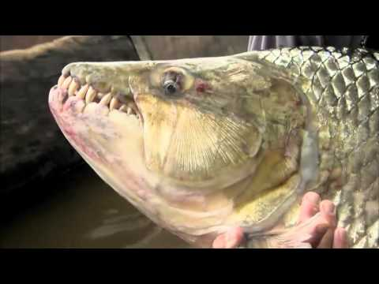

"Vrem apă!". Strigăt disperat al fermierilor,...
 RTV VIDEO RTV LIVE ÎNREGISTRĂRI RTV MOBI POLITICA SOCIETATE ECONOMIE JUSTITIE EDUCATIE SANATATE VREMEA EXTERN LIFE SPORT HOROSCOP SCITECH Articol publicat in: Economie"Vrem apă!". Strigăt disperat al fermierilor, care cer Ministerului Agriculturii să declare Dobrogea zonă calamitată din cauza secetei
Publicat: Joi, 10 Septembrie 2020 10:56 // Actualizat: Joi, 10 Septembrie 2020 10:56 // Sursa: romaniatv.netAutor: Filip Stan
“VREM APĂ” este mesajul pe care Grupul de Inițiativă Civică al Producătorilor Agricoli din Dobrogea l-a lansat public odată cu întâlnirea de joi, de la Ministerul Agriculturii, între fermieri și oficiali ai instituției de resort. Fermierii dobrogeni au arat pe un câmp sterp un mesaj adresat autoritatilor: „Vrem apă!”, prin care vor să atragă atenția autorităților că Dobrogea suferă din cauza secetei.
ComenteazaFermierii speră ca Ministerul Agriculturii să reabiliteze sistemul de irigații din Dobrogea și să declare județul Constanța zonă calamitată, astfel încât agricultorii să își poată amâna plata ratelor către bănci.
" Timp de 3 ore, pe terenul dintre localitățile Comana și Negru Vodă, din utilajele fermierilor noștri vom scrie mesajul VREM APĂ! Tragem un semnal de alarma disperat către autorități de a găsi soluții, împreună cu fermierii, la seceta care afectează în mod special zona Dobrogei.
Invităm presa să ia parte atât la momentul aranjării utilajelor în teren pentru a obține scris acest mesaj, cât și la Ministerul Agriculturii unde, după întâlnirea cu oficialii de la București, la ora 13:00, vom comunica rezultatele discuțiilor. Punem la dispoziția presei imagini filmate din dronă de pe tot parcursul acțiunii desfășurate pe teren ", arată fermierii.
Citeşte şi Ministerul Agriculturii, veşti bune pentru fermieri. Încep plăţile pentru Programul Tomata
Conform sursei citate, la întâlnire vor participa, din partea Ministerului Agriculturii, secretarul de stat George Scarlat și reprezentanți ai Agenției Naționale de Îmbunătățiri Funciare. Grupul de Inițiativă Civică al Producătorilor Agricoli din Dobrogea va fi reprezentat prin: Răzvan Filipescu, Theodor Ichim, Mihaela Lainer, Cornel Zamfir, Mircea Chipăilă, Mihai Ciobanu, Jean Marc Lacrouts, Sezai Curtali și Dragoș Zainea.
Temele care se vor discuta în cadrul acestei întâlniri sunt teme de maximă importanță pentru fermierii dobrogeni:
1. Sistemul de irigații: Reabilitarea sistemului de irigații este o necesitate la acest moment în Dobrogea.
2. Amânarea plății ratelor către băncile comerciale și firmele de leasing, pentru utilaje agricole, echipamente, terenuri și active agricole – măsură esențială pentru supraviețuirea agriculturii din județele Constanța și Tulcea în acest an.
3. Declararea județului Constanța "zonă calamitată"- seceta extremă din acest an impune această măsură.
loading... Comenteaza // Vezi comentarii Citeste mai mult despre:Ministerul Agriculturii protest fermieri seceta dobrogea Loading... Daca ti-a placut articolul, urmareste RomaniaTV.NET pe facebook sau twitter . DE ULTIMĂ ORĂ ROMÂNIATV.NET EXCLUSIV Ciolacu, despre creşterea pensiilor: "Am vorbit cu mai... 21 sep, 19:49 0 Marcel Ciolacu, avertisment pentru români: Liberalii vor... 21 sep, 22:44 0 Mihai Craiu, sfaturi pentru elevi şi profesori ca să se... 21 sep, 22:44 0 Alegeri locale 2020. Traian Băsescu: Şansele mele sunt... 21 sep, 20:29 0 Ministrul Sănătăţii, despre pandemia din România: Sperăm... 21 sep, 20:44 0 WOWBIZ.RO Calin Popescu Tariceanu e oficial cel mai bogat candidat... WOWBIZ.RO Familia Sorinei din Baia de Aramă a explodat după ce a... WOWBIZ.RO Gina Pistol se retrage din televiziune! Vedeta are... StiriNebune.ro Scandaluri sexuale neștiute! De la perversiunile cuplului... StiriNebune.ro StiriNebune.ro EVZ.RO Rusia mută armata la granița României! Forță... EVZ.RO OMS a făcut cel mai crunt anunț! Toată lumea se temea de... EVZ.RO Bomba zilei despre pensii. Milioane de români vor afla... ŞTIRI CANCAN.RO A rămas cu 'zâna' la vedere! Andreea Marin, gafă uriașă... 0 Vedeta TVR, în lacrimi! Fiul său S-A SINUCIS chiar de... 0 HUFF.RO Jador LUAT LA MIȘTO la iUmor. „Acum te lauzi că ai inele... HUFF.RO Mâine, MARE SFÂNT făcător de minuni. CE RUGĂCIUNE să spui... HUFF.RO APOCALIPSA ZODIILOR. Vine o zi grea – horoscop complet 22... CAPITAL.RO O altă nenorocire amenință Planeta! Sute de milioane de... CAPITAL.RO Ion Țiriac aruncă BOMBA: Dau 30 de milioane de euro! CAPITAL.RO SE TERMINĂ pandemia! Streinu-Cercel a spus exact când! E... SPYNEWS.RO Rudel Obreja și ținuta ”extravagantă”! A ieșit cu... SPYNEWS.RO Giulia Nahmany, scandal total, din cauza banilor / Își... SPYNEWS.RO Alina Ceușan, hărțuită de un afacerist / Chemată, de... OBIECTIV.INFO Manager spital suport-COVID: \"Când om ajunge la 2.000 de... OBIECTIV.INFO Irina Tănase: \"Liviu Dragnea şi-a tăiat două degete cu... OBIECTIV.INFO Te saluţi prin atingerea cotului? Iată de ce trebuie să... FEMINIS.RO Poftă de PIPER? Ce înseamnă, de fapt, când organismul... NOOBZ.RO Telefonul lui Jeff Bezos de la Amazon a fost ”spart de un... NOOBZ.RO Noua interfață Facebook cu mod întunecat e aici JURNALUL.RO Horoscop săptămânal, 21 - 27 septembrie. Fecioarele se... JURNALUL.RO Demența birocratică din timpul „ritualului” de... JURNALUL.RO Luna Nouă în Fecioară. Trei ritualuri pe care trebuie să... B365.RO Proiect: Vouchere de 50 de lei de persoană pentru... B365.RO Incineratorul de nămol este aproape de finalizare: Este o... B365.RO Anunțul Ministerului Mediului privind poluarea din... STIRITV.RO Vecinii Cristinei Țopescu au vorbit, n-au mai suportat și... STIRITV.RO Ce au găsit ANCHETATORII la casa Cristinei Țopescu! A... STIRITV.RO FENOMEN RAR la noapte, care SCHIMBĂ TOT! Cum sunt... SFATULPARINTILOR.RO Horoscop zilnic: Horoscopul zilei de azi MARTI 22... SFATULPARINTILOR.RO MESAJUL SAPTAMANAL de la INGERII PAZITORI zodii 21-27... SFATULPARINTILOR.RO Horoscop TAROT saptamana 21-27 SEPTEMBRIE 2020. Mesajele... FEMINIS.RO Nu se ştia ASTA până acum despre banalul PARACETAMOL - Ce... FEMINIS.RO Marte RETROGRAD 2020 - Ce să faci şi ce să NU faci în... FEMINIS.RO Cum scapi de răul de mişcare fără pastile - Cercetătorii... REDACTIA.RO Ce fac și cu ce se ocupă fetele lui Vadim Tudor. Fiica... REDACTIA.RO UIMITOR! Aceste fetițe s-au născut din aceeași mamă și în... REDACTIA.RO Lidia Buble a scos piesa „Vino du-te” feat VUNK. E o... Fabricat in Romania Un nou focar in Romania. Orasul intra in Scenariul Rosu.... Fabricat in Romania Daniela Cusnir, condusa pe ultimul drum. Cum a fost... Fabricat in Romania O noua epidemie loveste China. Bacteria a fost scapata... COMENTARII
1 EUR 4.8583 RON 22 Sep noapte 13 ° zi 28 ° CELE MAI NOI ȘTIRI DIN ECONOMICA.NET Milioane de români, în culmea fericirii! Se dau înapoi banii pe gaze și curent electric! FANATIK.RO Vestea a venit in urma cu putin timp. Este vorba despre Andreea Marin. Da, e adevarat! Soc in toata Romania Dramă fără margini. Ce i s-a întâmplat fetiței de 4 ani bătută cu bestialitate de mama ei după ce a ajuns pe mâinile unei asistente maternale Dana Budeanu a izbucnit în lacrimi în emisiunea lui Mihai Gâdea de la Antena 3. Drama pe care o ascunde Elena Udrea, apariție de infarct la ziua fiicei sale. Rochia a lăsat la vedere tot KANALD.RO Se INCHID scolile! Numarul de cazuri a explodat in Romania Vesti bune de la Nelu Tataru! A facut anuntul in urma cu putin timp: ''In a doua jumatate a lunii octombrie...'' Bilanț coronavirus 21 septembrie 2020: 808 cazuri noi din doar 6.348 de teste! Peste 12% din teste au fost pozitive! Ludovic Orban a facut anuntul important pentru toti romanii: ''Carantinare de 14 zile'' HUFF.RO Jador LUAT LA MIȘTO la iUmor. „Acum te lauzi că ai inele de 24K, înainte…” Mâine, MARE SFÂNT făcător de minuni. CE RUGĂCIUNE să spui ca să ți se îndeplinească DORINȚELE APOCALIPSA ZODIILOR. Vine o zi grea – horoscop complet 22 septembrie CAPITAL.RO O altă nenorocire amenință Planeta! Sute de milioane de oameni sunt expuși direct Ion Țiriac aruncă BOMBA: Dau 30 de milioane de euro! SE TERMINĂ pandemia! Streinu-Cercel a spus exact când! E mai repede decât credeam CELE MAI NOI ȘTIRI Horoscop zilnic: Horoscopul zilei de azi MARŢI 22 SEPTEMBRIE 2020. E ziua ECHINOCŢIULUI de toamnă. Mesaje pentru inimă Incendiu în comuna Lipovăţ, Vaslui. Zeci de hectare de vegetaţie uscată au ars timp de 5 ore Rareş Bogdan proclamă victoria totală a PNL la alegerile locale: "După 24 de ani, PNL îl scoate pe Oprişan de la Consiliul Judeţean" Mihai Craiu, sfaturi pentru elevi şi profesori ca să se protejeze de coronavirus Rareş Bogdan şi Băsescu, contre pe tema şanselor lui Nicuşor Dan: "Oraşul o să pută a gunoaie, apa caldă va fi ca şi acum!" Marcel Ciolacu, avertisment pentru români: Liberalii vor tăia salarii. Ne vine rândul fiecăruia Încă patru elevi din Sectorul 4, confirmaţi cu coronavirus Cum arată Donatella Versace în costum de baie, la 65 de ani. Designerul a fost fotografiată pe o plajă din Sardinia O universitate din Belgia caută leacul pentru Alzheimer găurind craniile maimuţelor din laborator şi introducându-le electrozi Mesajul lui Maricel Popa, Preşedinte CJ Iaşi, pentru ministrul Tătaru: Lăsaţi cinismul la o parte şi ajutaţi-ne să salvăm vieţi Biu Marquetti, dezvăluiri surprinzătoare la Chefi la cuţite: "Viaţa e grea în Cuba. Am făcut armata, am învăţat să trag cu armele" Dela0.ro: În România din 5 infracţiuni sexuale sesizate la poliţie, 4 sfârşesc fără dispoziţii de trimitere în judecată a unui agresor Campanie electorală cu simboluri comuniste pentru primăria Mangalia ECHINOCŢIUL DE TOAMNĂ 2020. Marţi după-amiază vine oficial toamna, nopţile devin din ce în ce mai lungi Ministrul Sănătăţii, despre pandemia din România: Sperăm ca în a doua jumătate a lunii octombrie să mergem pe o pantă descendentă JURNALUL.RO Horoscop săptămânal, 21 - 27 septembrie. Fecioarele se concentrează pe viața profesională Demența birocratică din timpul „ritualului” de pensionare. Dosarul, mai scump ca prima pensie Luna Nouă în Fecioară. Trei ritualuri pe care trebuie să le faci după 17 septembrie, pentru o viață mai sănătoasă Schimbare importantă pentru începutul noului an școlar. Anunțul lui Nelu Tătaru FEMINIS.RO Poftă de PIPER? Ce înseamnă, de fapt, când organismul cere acest condiment Nu se ştia ASTA până acum despre banalul PARACETAMOL - Ce păţeşti când îl iei pentru dureri şi alte afecţiuni Marte RETROGRAD 2020 - Ce să faci şi ce să NU faci în această perioadă Cum scapi de răul de mişcare fără pastile - Cercetătorii au găsit soluţia StiriNebune.ro Narcis Răducan este puternic afectat de coronavirus: „Situația e dramatică! Am pierdut 90 la sută din afacere!” Cum luptă Arabia Saudită cu pandemia de coronavirus. Razvan Lucescu: "Au luat nişte măsuri mult mai rapide" FCSB. Gigi Becali, ajutor pentru Spitalul „Matei Balș”: „Am sunat la fabrica de cămăși și le-am cerut să facă doar măști și halate” NOOBZ.RO Telefonul lui Jeff Bezos de la Amazon a fost ”spart de un prinț” Noua interfață Facebook cu mod întunecat e aici Cum să-ți securizezi contul de WhatsApp împotriva hacking-ului social KFETELE.RO Ce înseamnă, de fapt, echinocțiul de toamnă. Ce se întâmplă pe 22 septembrie 2020. Toate zodiile sunt afectate Se dau bani pentru români! Cine poate primi 15000 de euro nerambursabili Horoscop săptămânal Mariana Cojocaru 6-12 septembrie 2020. Probleme de sănătate și cariera în impas pentru două zodii DIVAHAIR.RO Transformare incredibilă! Oamenii de abia o mai recunosc pe Ramona Gabor, în urma operațiilor estetice. Ți se mai pare că seamănă cu originalul? Johnny Depp o acuză pe Amber Heard ca l-ar fi bătut Venus intră în Berbec pe 7 februarie: cum este influențată viața zodiilor Nabadaiosul Marte intra in Capricorn: zodiile sunt gata sa o ia de la capat YVE.RO Andreea Mantea, răsfățată de iubit cu un cadou special Anna Lesko tună și fulgeră la filmările pentru „Ferma”. A dat de pământ cu o concurentă Gina Pistol și-a confirmat sarcina Lidia Buble, goală în cadă 24 H CELE MAI CITITE ȘTIRI SIMONA HALEP - KAROLINA PLISKOVA 6-0, 2-1 şi cehoaica abandonează. Titlul de la Roma revine Simonei Ludovic Orban, anunţ îngrijorător: "România se află într-un pericol extrem de mare". Apelul premierului la partidele politice Florin Cîţu, anunţ de ultimă oră! Ce se întâmplă cu pensiile românilor în acest an Elena Udrea şi-a sărbătorit fetiţa. Eva Maria a împlinit 2 ani FOTO BILANŢ CORONAVIRUS 21 SEPTEMBRIE. 808 cazuri noi şi 23 decese în ultimele 24 de ore De ce apar forme severe de coronavirus la tineri. Doi experţi români au găsit explicaţia Nicuşor Dan, legături strânse cu Clanul Sportivilor. Filmat alături de un dezvoltator imobiliar în timpul unor negocieri suspecte Ce se întâmplă cu românii întorşi din ţările încadrate în zonele de risc. Anunţul lui Ludovic Orban Adrian Streinu Cercel, avertisment teribil despre turnura neaşteptată luată de coronavirus. "Vor să înţeleagă, bine! Nu, iarăşi bine!" Cod Rutier 2020. AMENDA IMENSĂ pe care o primeşti dacă te enervezi prea tare în TRAFIC OBIECTIV.INFO Manager spital suport-COVID: "Când om ajunge la 2.000 de cazuri, deja simt apa la gât" Irina Tănase: "Liviu Dragnea şi-a tăiat două degete cu flexul, în puşcărie" Te saluţi prin atingerea cotului? Iată de ce trebuie să renunţi la acest obicei NATO e gata pentru cel mai NEGRU SCENARIU x ARTICOLE PE ACEEAŞI TEMĂ BILANŢ CORONAVIRUS 21 SEPTEMBRIE. 808 cazuri noi şi 23... 21 sep, 12:14 0 Euro ar putea ajunge la 5,2 RON anul viitor! Previziunile... 21 sep, 09:21 0 Ludovic Orban, anunţ îngrijorător: "România se află... 21 sep, 09:49 0 Klaus Iohannis a inaugurat linia Gara de Nord-Otopeni.... 21 sep, 12:17 0 EVZ.RO Traian Băsescu aruncă bomba: Mă cutremură! Ce a aflat... ECONOMICA.NET Anunț oficial al autorităților! Este cumplit ce se... Politica Societate Economie Justitie Educatie Sanatate Vremea Extern Life Sport Horoscop SciTech Urmareste RomaniaTV.NET pe facebook sau twitter . RTV VIDEO RTV MOBI RTV RADIO RTV LIVE RTV INREGISTRARI RTV RSS NOOBZ.ro B365.RO OBIECTIV.INFO ECONOMICA.NET LOGIN DESPRE NOI ECHIPA PUBLICITATE CONTACT TERMENI SI CONDITII Codul profesional al jurnaliștilor RTV RECEPTIE POLITICA COOKIES RTV Satellite NET SRL
Telefon 031.860.51.09 | Fax: 037.860.31.60
E-mail: [email protected]